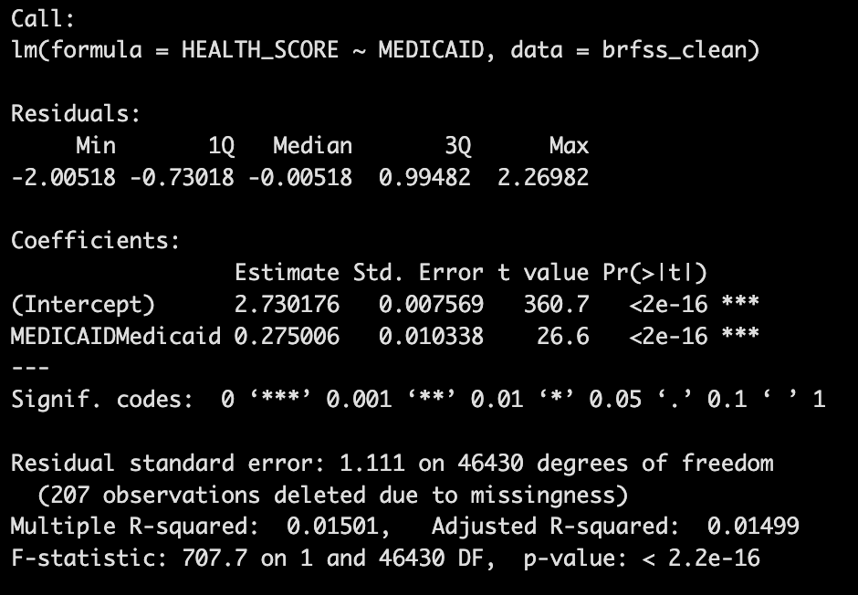
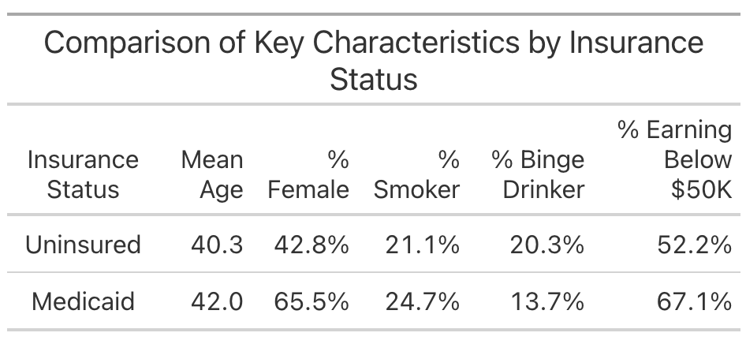

library(tidyverse)
library(dplyr)
library(haven)Data Lab 6 - Regression Basics: Controlling for Counfounders
In this Data Lab, you will use a basic regression model to explore the relationship between Medicaid coverage and health while controlling for potential confounders. The focus for this Data Lab is on illustrating the concept of a best‐fit line and understanding how regression begins to address confounding, which will set the stage for more advanced multivariate regression models in Data Lab 7.
In Data Lab 5, we examined differences in self‐reported health between Medicaid recipients and the uninsured using descriptive comparisons. However, those raw comparisons may be biased if confounders, such as age or education, affect health outcomes.
Today, we will build an intuitive understanding of regression by focusing on how age mediates the relationship between Medicaid coverage and health. By fitting a simple linear model, you will see how regression draws a best‐fit line through the data by minimizing the sum of the squared residuals. Although a univariate regression cannot control for multiple confounders at once, it demonstrates the core idea behind using regression as a tool to adjust for confounding factors.
Step 1: Create a New R Markdown Document for this Data Lab
Create a new R Markdown document and give it a YAML header that includes the title “HPAM 7660 Data Lab 6”, your name, the date, and “pdf_document” as the output format. You’ll submit a pdf of this R Markdown document once you’ve finished the Data Lab today.
Step 2: Load and Prepare the Data
In this step, we’ll load the dataset we created in Data Lab 4 and ensure it contains the necessary variables. We’ll also recode categorical variables to improve readability in our visualizations.
First, let’s load the necessary libraries:
If you saved the dataset from Data Lab 4, you should be able to load it using the following code:
brfss <- readRDS("path_to_file/brfss_clean.rds")Remember that you’ll need to replace “path_to_file” with the actual file path on your computer and use whatever name you gave to your saved .rds file (I called mine “brfss_clean.rds” in the last Data Lab).
Alternatively, if you didn’t save the data set last time, run the following code to recreate the brfss_clean dataset from Data Lab 4:
brfss_data <- read_xpt("path_to_file/LLCP2023.XPT")
brfss_smaller <- select(brfss_data, PRIMINS1, GENHLTH, `_AGE80`, SEXVAR, INCOME3, EDUCA, SMOKE100, SMOKDAY2, ALCDAY4, DRNK3GE5)
brfss_clean <- brfss_smaller %>%
filter(PRIMINS1 %in% c(5, 88), `_AGE80` < 65) %>%
mutate(
FEMALE = ifelse(SEXVAR == 2, 1, 0),
MEDICAID = ifelse(PRIMINS1 == 5, 1, 0),
SMOKER = case_when(
SMOKDAY2 %in% c(1,2) ~ 1,
SMOKE100 == 2 | SMOKDAY2 == 3 ~ 0,
SMOKDAY2 %in% c(7,9) | SMOKE100 %in% c(7,9) ~ NA_real_
),
BINGE = case_when(
DRNK3GE5>=1 & DRNK3GE5<=76 ~ 1,
DRNK3GE5==88 | ALCDAY4==888 ~0,
DRNK3GE5 %in% c(77,99) | ALCDAY4 %in% c(777,999) ~ NA_real_
)
)Once you’ve loaded the data, run the following code to rename some of the categorical variables and label them for clarity:
brfss_clean <- brfss_clean %>%
mutate(
MEDICAID = factor(MEDICAID, labels = c("Uninsured", "Medicaid")),
EDUCATION = factor(EDUCA, levels = c(1,2,3,4),
labels = c("Less than HS", "HS Grad", "Some College", "College Grad")),
EDUCATION = ifelse(EDUCA %in% c(7,9), NA, EDUCATION),
GENHLTH = factor(GENHLTH, levels = c(1,2,3,4,5),
labels = c("Excellent", "Very Good", "Good", "Fair", "Poor")),
GENHLTH = ifelse(GENHLTH %in% c(7,9), NA, GENHLTH)
)Finally, let’s convert our measure of self-rated health to a numeric scale so that we can use it as an outcome in our regression model:
brfss_clean <- brfss_clean %>%
mutate(HEALTH_SCORE = as.numeric(GENHLTH))Step 3: Estimating the Relationship between Medicaid Coverage and Health
Now let’s estimate a very simple regression model that will highlight the association between Medicaid coverage and health among our sample of Medicaid enrollees and the uninsured:
model_1 <- lm(HEALTH_SCORE ~ MEDICAID, data = brfss_clean)Notice that when you run this code, no output shows up in the Console window! We’ll get to that in a minute. First, let’s go through what this code is doing.
We’re creating a new regression model that I’ve called model_1, but you could call this whatever you want. The lm tells R that we want to estimate a linear model (as opposed to a non-linear model like a Logit or Probit model). We then need to tell R what we want to use for our dependent variable, in this case HEALTH_SCORE, and our independent variable(s), in this case MEDICAID. Finally, we need to tell R the name of the dataset where it can find the HEALTH_SCORE and MEDICAID variables: brfss_clean.
To see the output from this regression in the Console window, run the following code:
summary(model_1)You should get something that looks like this:

We see that R repeats the regression formula that we ran. Then we get some information about the distribution of the residuals - we won’t do much with that, but it can be useful in certain situations. Next, we get the information that we’re really interested in: the coefficient estimates.First, we get the coefficient, standard error, t-value, and p-value for the “Intercept” coefficient. You should see a value of 2.73 for this coefficient, which in this case, means that the average HEALTH_SCORE for the uninsured is 2.73. (If you go back and look at the “Comparison of Self-Reported Health” table that you created in Data Lab 5, you’ll see the same value for the health score of the uninsured!).
Next, we have the coefficient for the MEDICAID variable. Remember that MEDICAID is what’s called an “indicator” variable, meaning that it takes on a value of 1 for those with Medicaid coverage and a value of 0 for those who are uninsured. The coefficient estimate of 0.275 tells us that the HEALTH_SCORE for Medicaid enrollees is 0.275 larger than the score for the uninsured. In other words, if the average HEALTH_SCORE for the uninsured is 2.73, then the average score for Medicaid enrollees is 2.73+0.275=3.005. Again, this is the same value we had in the table from Data Lab 5 and, since a higher value of HEALTH_SCORE indicates worse health, it tells us that Medicaid coverage is associated with worse self-reported health.
Step 4: Estimating the Relationship between Medicaid Coverage and Health Controlling for Age
In Data Lab 5, we created the following table that compared values of different characteristics between Medicaid enrollees and the uninsured:

Notice that Medicaid enrollees tend to be slightly older than the uninsured. Since we know that age and health are closely related, this age difference might be confounding our estimate of the relationship between Medicaid coverage and health. Let’s estimate a new regression model of the association between Medicaid coverage and health that controls for age differences between Medicaid enrollees and the uninsured.First, it would be helpful to visualize the relationship between age and health so that we can get an intuitive understanding of how regression actually works. Let’s plot the relationship between age and health score from the data:
age_health <- brfss_clean %>%
group_by(`_AGE80`) %>%
summarize(MEAN_HEALTH = mean(HEALTH_SCORE, na.rm = TRUE))
ggplot(age_health, aes(x = `_AGE80`, y = MEAN_HEALTH)) +
geom_point() +
labs(title = "Scatterplot of Age vs. Health Score",
x = "Age",
y = "Health Score") +
theme_minimal()To get a better sense of what regression is actually doing, let’s plot a regression line through the data points in the figure. We can do this by adding a line to the code above:
ggplot(age_health, aes(x = `_AGE80`, y = MEAN_HEALTH)) +
geom_point() +
geom_smooth(method = "lm", se = TRUE, color = "blue")
labs(title = "Scatterplot of Age vs. Health Score",
x = "Age",
y = "Health Score") +
theme_minimal()The line we added geom_smooth(method = "lm", se = TRUE, color = "blue") tells R that we want to add a regression line from a liner model (“lm”) to the plot, we want to include a confidence interval (se = TRUE), and we want the line color to be blue (color = “blue”).
Questions: Interpreting the Age/Health Relationship
Based on the results of the scatterplot, how would you characterize the relationship between age and self-rated health?
Given the difference in average age between Medicaid enrollees and the uninsured, how might age be confounding the relationship between Medicaid coverage and health? In other words, what do you anticipate happening to the coefficient estimate on the
MEDICAIDvariable in your prior regression if you were to control for age?
Now that we have some sense of how age differences might be confounding the estimated relationship between Medicaid and health, estimate the following regression model that includes age as an independent variable:
model_2 <- lm(HEALTH_SCORE ~ MEDICAID + `_AGE80`, data = brfss_clean)
summary(model_2)Questions: Interpreting the Regression Output
Interpret each of the coefficient estimates from the regression. Specifically, what does each number tell us.
How did the relationship between Medicaid coverage and self-rated health change when you added age as a regression control?
Step 5: Knitting to PDF
Once you’ve finished answering the questions, knit your R Markdown document to a PDF and upload the PDF here. Your document should include all of the tables and figures you created in this Data Lab along with your answers to the questions.
Key Takeaways
Regression is about finding the best-fit line that minimizes the error between observed and predicted values. This process forms the foundation for more complex analyses.
The example with age and health helps illustrate the basic mechanics of regression. It shows how we can summarize the average relationship between two variables.
While univariate regression (i.e., regression models with a single covariate) does not “control” for multiple factors, it introduces the idea that if a variable like age affects health, then failing to adjust for it in other analyses (e.g., examining Medicaid coverage) can bias the results. We will address this more fully in Data Lab 7.